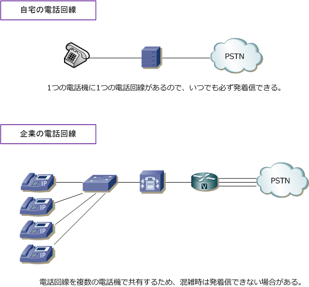
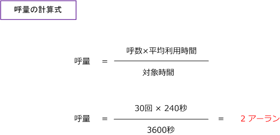
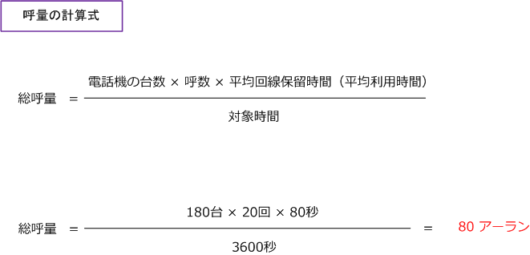
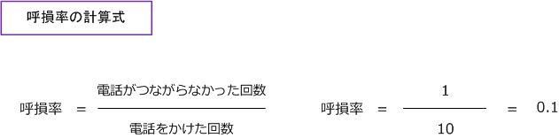
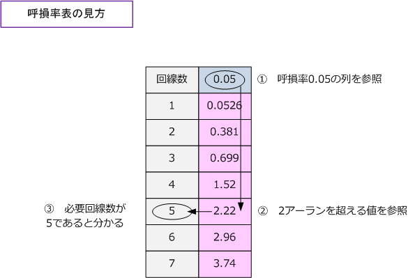

IP Telephony - erlang
呼量による回線数の算出
自宅では１つの電話に１つの電話回線を使用するため、必ず電話の発着信ができます。しかし企業では 電話回線を複数の電話機で共有することから、混雑している場合は発着信できない電話機が出てきます。
例えば、3回線を契約していて電話機が4台ある場合は、3台の電話機が同時に使用している場合、残りの 1台は発着信できません。契約回線を4回線にすれば、常に同時に全ての電話が発着信できますが、その 場合は、月額の回線費用が高くなります。そもそもオフィス電話の全台が、同時に常に発着信することは あまりありません。そこでコストを意識して呼量、呼損率、呼損率表をもとに適正に回線数を算出します。

呼、呼量、呼損率
先ずテレフォニーにおける「呼」「呼量」「呼損率」という用語を理解しましょう。
| テレフォニー用語 | 説明 |
|---|---|
| 呼 | 1回の通話の利用時間のこと。（電話を発信し、相手側で着信して電話が切られるまで） |
| 呼量 | 呼の利用時間の合計を単位時間で割った値のこと。アーランと呼ばれる。 |
| 呼損率 | 電話をかけた時に、回線数が足らずに電話が発着信できない確立のこと。 |
呼量（アーラン）
呼量は、以下の数式により算出できます。例えば、1時間（3600秒）あたり、30回の通話があり、この時の 平均利用時間（保留時間も含む）が4分間（240秒）である場合には、呼量は「2」であることが分かります。

それでは、電話機が180台あるケースを考えてみましょう。例えば、180台の電話機のトラフィックを調べた ところ、電話機１台当たりの呼の発生頻度（発着呼の合計）は3分に1回、平均回線保留時間は80秒であった とします。この時の呼量は何アーランでしょうか。先ず条件を整理してみると以下の3点であると分かります。
条件1 電話機の台数：180台 条件2 呼の発生頻度：3分に1回（つまり、1時間あたり20回） 条件3 平均回線保留時間：80秒
上図の呼量の計算式では1台の呼量が求められます。今回は180台なので総呼量としては180倍となります。 下図の呼量の計算式に従うと、総呼量は80アーランであることが分かります。

呼損率
呼損率は、以下の計算式で算出できます。例えば、10回電話をかけて1回電話をつながらなかった時の 呼損率は0.1。例えば、100回電話をかけて1回電話をつながらなかった場合の呼損率は 0.01 となります。

契約回線数が多いほど、電話がつながりやすくなるので、呼損率が低くなりますがコストは高くなります。 一方、契約回線数が少ないほど電話がつながりにくくなり呼損率が高くなりますがコストは抑えられます。
そこでアーランB式の理論式を使用して呼量、呼損率、回線数の関係を推測することができます。この アーランB式が呼損率表のことです。アーランB式の理論式は複雑で計算するのは困難を極めることから 呼損率表の早見表に従って必要な回線数を考えていきます。ピンク枠内の数字は呼量（アーラン）です。
| 必要回線数 | 呼損率 | ||||||||
|---|---|---|---|---|---|---|---|---|---|
| 必要回線数 | 0.001 | 0.002 | 0.003 | 0.005 | 0.01 | 0.02 | 0.03 | 0.05 | 0.1 |
| 回線数 1 | 0.0010 | 0.0020 | 0.0030 | 0.0050 | 0.0101 | 0.0204 | 0.3090 | 0.0526 | 0.111 |
| 回線数 2 | 0.0458 | 0.0653 | 0.0806 | 0.1050 | 0.1530 | 0.2330 | 0.2820 | 0.381 | 0.595 |
| 回線数 3 | 0.194 | 0.249 | 0.289 | 0.349 | 0.455 | 0.6020 | 0.7150 | 0.699 | 1.27 |
| 回線数 4 | 0.439 | 0.535 | 0.602 | 0.701 | 0.869 | 1.09 | 1.26 | 1.52 | 2.05 |
| 回線数 5 | 0.762 | 0.900 | 0.994 | 1.130 | 1.36 | 1.66 | 1.88 | 2.22 | 2.88 |
| 回線数 6 | 1.15 | 1.33 | 1.45 | 1.62 | 1.91 | 2.88 | 2.54 | 2.96 | 3.76 |
| 回線数 7 | 1.58 | 1.60 | 1.95 | 2.16 | 2.50 | 2.94 | 3.25 | 3.74 | 4.67 |
例えば電話の統計レポートから呼量が2アーランであることが分かり、呼損率を0.05以下にしたい場合には 必要となる回線数は5にすることが適切であることが分かります。呼損率表の見方の順番は以下の通りです。

呼損率表の見方が分かれば、次のようなケースからも必要な回線数も分かると思います。例えば1時間あたり 平均通話回数が「60回」であり、平均保留時間が「120秒」であり、呼損率を0.1にしたい時の必要回線数は どうなるか。120秒の通話が60回（120×60=7200）を1時間（3600秒）で割ると呼量（アーラン）は 2 で あると分かります。呼損率表に従い、呼損率0.1で呼量が2以上なら、必要回線数の最低は 4 だと分かります。
音声品質の評価
音声品質を評価する方法には、主観評価と客観評価の2種類の方式があります。主観評価の方法には MOS（Mean Option Score）と呼ばれる方法があります。MOSでは実際に人間が聞いて品質を1～5の 5段階評価する方法。1が最も悪く5が最も良い評価として点数をつけます。人手とコストのかかる手法。
客観評価にはPSQM、PESQ、R値の方法があり、PSQM（Perceptual Speech Quality Measure）は 従来の電話機での評価方式であり0～6.5の範囲で数値化されます。数値が低いほど高品質を示します。
PESQ（Perceptual Evaluation of Speech Quality）はPSQMの改良版。IP電話特有のパケットの損失 パケットの揺らぎなどを評価値として反映できる方法。-0.5～4.5範囲で数値化。数値が高いほど高評価。
R値は、E-modelというアルゴリズムにより回線の雑音(ノイズ)、音量、エコー、遅延などから算出される 音声品質評価の手法です。R値は、発信する電話から受信する電話までのエンドツーエンドの音声品質を 0～100の値で評価します。値が高いほど高い評価を示します。総務省では、IP電話の音声品質を、R値と 遅延の2つの要素に基づいてクラスA、B、Cの3つに分類しています。クラスAが音声品質が最も高いです。 なお、通信事業者が050のIP電話サービスを提供するためにはクラスCの基準をクリアする必要があります。
| クラス | クラスA | クラスB | クラスC |
|---|---|---|---|
| R値 | 80超 | 70超 | 50超 |
| 遅延 | 100ミリ秒未満 | 150ミリ秒未満 | 400ミリ秒未満 |
| 品質レベル | 固定電話レベル音声品質 | 携帯電話レベルの音声品質 | それ以下の音声品質 |